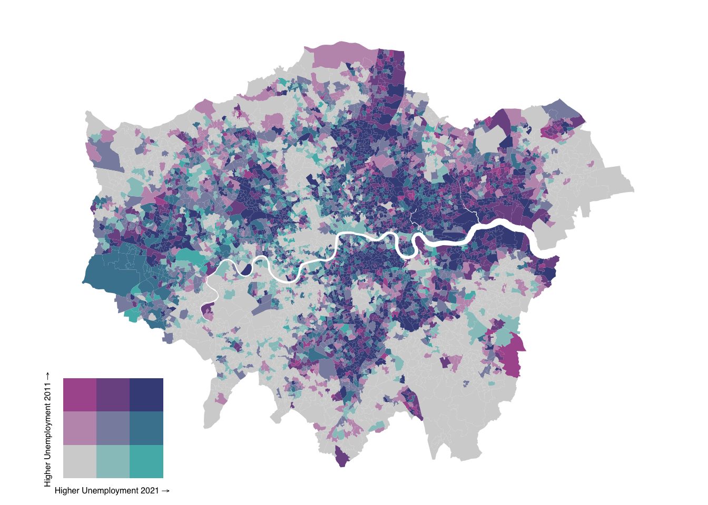

9 Beyond the Choropleth
So far, we have primarily created univariate choropleth maps to visualise data across defined spatial areas, such as LSOAs. This week, we will expand on this by exploring bivariate maps, which illustrate the relationship between two variables within a single visualisation. We will also introduce you to the ggplot2 library and pay some attention to creating functions to automate and repeat analyses for different spatial units, allowing for more efficient and consistent workflows
9.1 Lecture slides
You can download the slides of this week’s lecture here: [Link].
9.2 Reading list
Essential readings
- Longley, P. et al. 2015. Geographic Information Science & Systems, Chapter 11: Cartography and Map Production, pp. 1-32. [Link]
Suggested readings
- Cheshire, J. and Uberti, O. 2021. Atlas of the invisible: maps and graphics that will change how you see the world. London: Particular Books.
- Wickham, H., Çetinkaya-Rundel, M., and Grolemund, G. R for Data Science. 2nd edition. Chapter 19: Functions. [Link]
9.3 Unemployment in London
This week, we will look at the change in unemployment across London between 2011 and 2021. Specifically, we will try to reconcile 2011 Census data with 2021 Census data and present the results on a bivariate map. The data cover all usual residents, as recorded in the 2011 and 2021 Census for England and Wales, aggregated at the Lower Super Output Area (LSOA) level.
Administrative geographies, such as LSOAs, are periodically updated to reflect changes in population and other factors, resulting in occasional boundary adjustments. Consequently, it is essential to use the 2011 LSOA boundaries when mapping 2011 Census data and the 2021 LSOA boundaries for 2021 Census data. To facilitate mapping changes over time, we have access to a csv file containing a best-fit lookup table. This table provides a correspondence between 2011 LSOAs and their equivalent 2021 LSOAs, enabling consistent comparison across census periods.
You can download three files below and save them in your project folder under data/attributes. Along with these dataset, we also have access to a GeoPackage that contains the 2021 LSOA boundaries.
| File | Type | Link |
|---|---|---|
| London LSOA Census 2011 Unemployment | csv |
Download |
| London LSOA Census 2021 Unemployment | csv |
Download |
| England and Wales LSOA 2011-2021 Lookup | csv |
Download |
| London LSOA 2021 Spatial Boundaries | GeoPackage |
Download |
Open a new script within your GEOG0030 project and save this as w09-unemployment-change.r.
Begin by loading the necessary libraries:
R code
# load libraries
library(tidyverse)
library(sf)
library(biscale)
library(cowplot)You may have to install some of these libraries if you have not used these before.
Once downloaded, we can load all three files into memory:
R code
# read 2011 data
lsoa11 <- read_csv("data/attributes/London-LSOA-Unemployment-2011.csv")Rows: 4835 Columns: 4
── Column specification ────────────────────────────────────────────────────────
Delimiter: ","
chr (2): lsoa11cd, lsoa11nm
dbl (2): eco_active_unemployed11, pop11
ℹ Use `spec()` to retrieve the full column specification for this data.
ℹ Specify the column types or set `show_col_types = FALSE` to quiet this message.# read 2021 data
lsoa21 <- read_csv("data/attributes/London-LSOA-Unemployment-2021.csv")Rows: 4994 Columns: 4
── Column specification ────────────────────────────────────────────────────────
Delimiter: ","
chr (2): lsoa21cd, lsoa21nm
dbl (2): eco_active_unemployed21, pop21
ℹ Use `spec()` to retrieve the full column specification for this data.
ℹ Specify the column types or set `show_col_types = FALSE` to quiet this message.# read lookup data
lookup <- read_csv("data/attributes/England-Wales-LSOA-2011-2021.csv")Rows: 35796 Columns: 5
── Column specification ────────────────────────────────────────────────────────
Delimiter: ","
chr (5): lsoa11cd, lsoa11nm, lsoa21cd, lsoa21nm, chgind
ℹ Use `spec()` to retrieve the full column specification for this data.
ℹ Specify the column types or set `show_col_types = FALSE` to quiet this message.# inspect
head(lsoa11)# A tibble: 6 × 4
lsoa11cd lsoa11nm eco_active_unemployed11 pop11
<chr> <chr> <dbl> <dbl>
1 E01000001 City of London 001A 34 1221
2 E01000002 City of London 001B 16 1196
3 E01000003 City of London 001C 39 1102
4 E01000005 City of London 001E 46 773
5 E01000006 Barking and Dagenham 016A 83 1251
6 E01000007 Barking and Dagenham 015A 87 1034# inspect
head(lsoa21)# A tibble: 6 × 4
lsoa21cd lsoa21nm eco_active_unemployed21 pop21
<chr> <chr> <dbl> <dbl>
1 E01000001 City of London 001A 32 1478
2 E01000002 City of London 001B 30 1383
3 E01000003 City of London 001C 68 1614
4 E01000005 City of London 001E 60 1099
5 E01000006 Barking and Dagenham 016A 57 1844
6 E01000007 Barking and Dagenham 015A 154 2908# inspect
head(lookup)# A tibble: 6 × 5
lsoa11cd lsoa11nm lsoa21cd lsoa21nm chgind
<chr> <chr> <chr> <chr> <chr>
1 E01000001 City of London 001A E01000001 City of London 001A U
2 E01000002 City of London 001B E01000002 City of London 001B U
3 E01000003 City of London 001C E01000003 City of London 001C U
4 E01000005 City of London 001E E01000005 City of London 001E U
5 E01000006 Barking and Dagenham 016A E01000006 Barking and Dagenham 016A U
6 E01000007 Barking and Dagenham 015A E01000007 Barking and Dagenham 015A U You can inspect both objects using the View() function.
9.3.1 Using lookup tables
To analyse changes in unemployment over time, we need to combine the 2011 and 2021 unemployment data. Previously, we have joined datasets using a unique identifier found in both, assuming the identifiers match exactly and represent the same geographies. However, when comparing the unique identifiers from (lsoa11cd and lsoa21cd) these datasets, we can see some clear differences:
R code
# inspect
length(unique(lsoa11$lsoa11cd))[1] 4835# inspect
length(unique(lsoa21$lsoa21cd))[1] 4994The number of LSOAs increased between the 2011 and 2021 Census due to boundary changes. Specifically, some 2011 LSOAs have been split into multiple 2021 LSOAs, while others have been merged into a single 2021 LSOA polygon. The relationship between 2011 and 2021 LSOAs is captured in the chgind column of the lookup table, which flags the type of change for each case.
| Type | Description |
|---|---|
U |
Unchanged: The LSOA boundaries remain the same from 2011 to 2021, allowing direct comparisons between data for these years. |
S |
Split: A 2011 LSOA has been divided into two or more 2021 LSOAs. Each split 2021 LSOA will have a corresponding record in the table, enabling comparisons by aggregating the 2021 LSOA data back to the 2011 boundary. |
M |
Merged: Two or more 2011 LSOAs have been combined into a single 2021 LSOA. Comparisons can be made by aggregating the 2011 LSOA data to match the new 2021 boundary. |
X |
Irregular/Fragmented: The relationship between 2011 and 2021 LSOAs is complex due to redesigns from local authority boundary changes or efforts to improve social homogeneity. These cases do not allow straightforward comparisons between 2011 and 2021 data. |
Although there are different approaches to handling this, today we will:
- Divide the total crimes for 2011 LSOAs that have been split equally across the corresponding 2021 LSOAs.
- Combine the total crimes for 2011 LSOAs that have been merged into a single 2021 LSOA.
The LSOA boundary changes in London between 2011 and 2021 did not result in any irregular or fragmented boundaries. Therefore, we only need to address the merged and split LSOAs.
This means we will apply weightings to the values based on their relationships. We can prepare these weightings as follows:
R code
# for unchanged LSOAs keep weighting the same
lsoa_lookup_same <- lookup |>
filter(chgind == "U") |>
group_by(lsoa11cd) |>
mutate(n = n())
# for merged LSOAs: keep weighting the same
lsoa_lookup_merge <- lookup |>
filter(chgind == "M") |>
group_by(lsoa11cd) |>
mutate(n = n())
# for split LSOAs: weigh proportionally to the number of 2021 LSOAs
lsoa_lookup_split <- lookup |>
filter(chgind == "S") |>
group_by(lsoa11cd) |>
mutate(n = 1/n())
# re-combine the lookup with updated weightings
lsoa_lookup <- rbind(lsoa_lookup_same, lsoa_lookup_merge, lsoa_lookup_split)
# inspect
lsoa_lookup# A tibble: 35,786 × 6
# Groups: lsoa11cd [34,747]
lsoa11cd lsoa11nm lsoa21cd lsoa21nm chgind n
<chr> <chr> <chr> <chr> <chr> <dbl>
1 E01000001 City of London 001A E01000001 City of London 00… U 1
2 E01000002 City of London 001B E01000002 City of London 00… U 1
3 E01000003 City of London 001C E01000003 City of London 00… U 1
4 E01000005 City of London 001E E01000005 City of London 00… U 1
5 E01000006 Barking and Dagenham 016A E01000006 Barking and Dagen… U 1
6 E01000007 Barking and Dagenham 015A E01000007 Barking and Dagen… U 1
7 E01000008 Barking and Dagenham 015B E01000008 Barking and Dagen… U 1
8 E01000009 Barking and Dagenham 016B E01000009 Barking and Dagen… U 1
9 E01000011 Barking and Dagenham 016C E01000011 Barking and Dagen… U 1
10 E01000012 Barking and Dagenham 015D E01000012 Barking and Dagen… U 1
# ℹ 35,776 more rowsYou can inspect both objects using the View() function.
We can now join the lookup table on the 2011 LSOA data:
R code
# join to lsoa data
lsoa11_21 <- lsoa11 |>
select(-lsoa11nm) |>
left_join(lsoa_lookup, by = c("lsoa11cd" = "lsoa11cd"))If we now compare the number of records in our lsoa11_21 dataset with the original 2011 and 2021 LSOA datasets, we notice some differences:
R code
# lsoa 2011
nrow(lsoa11)[1] 4835# lsoa 2021
nrow(lsoa21)[1] 4994# lookup
nrow(lsoa11_21)[1] 5016Somehow, the number of our LSOAs seem to have increased. However, this is not an actual increase in LSOAs; rather, the change in the number of LSOAs is due to our one-to-many relationships. A single 2011 LSOA can correspond to multiple 2021 LSOAs, which causes the data for that 2011 LSOA to be duplicated in the join operation. Fortunately, we anticipated this and have already created the necessary weightings. We can now apply these weightings to assign our 2011 population estimates to the 2021 LSOA boundaries as follows:
R code
# weigh data
lsoa11_21 <- lsoa11_21 |>
mutate(eco_active_unemployed11 = eco_active_unemployed11 * n) |>
mutate(pop11 = pop11 * n)
# assign 2011 to 2021
lsoa11_21 <- lsoa11_21 |>
group_by(lsoa21cd) |>
mutate(eco_active_unemployed11_lsoa21 = sum(eco_active_unemployed11)) |>
mutate(pop11_lsoa21 = sum(pop11)) |>
distinct(lsoa21cd, eco_active_unemployed11_lsoa21, pop11_lsoa21)We should now be left with all 2021 LSOAs, each containing the corresponding 2011 values, adjusted according to the merged and split LSOA relationships. We can quickly check this by comparing the original values with the re-assigned values:
R code
# inspect number
nrow(lsoa21)[1] 4994# inspect number
nrow(lsoa11_21)[1] 4994# inspect count original data
sum(lsoa11$pop11)[1] 6117482# inspect count re-assigned data
sum(lsoa11_21$pop11_lsoa21)[1] 6117482We can now join the 2011 and 2021 population data together:
R code
# join 2011 data with 2021 data
lsoa11_21 <- lsoa11_21 |>
left_join(lsoa21, by = c("lsoa21cd" = "lsoa21cd"))9.3.2 Making bivariate maps
Bivariate maps are visualisations that represent two different variables simultaneously on a single map, using combinations of colours, patterns, or symbols to convey relationships between them. They are commonly used to explore spatial correlations or patterns, such as comparing population density with income levels across a region. We will use a bivariate map to illustrate changes in unemployment between 2011 and 2021 in London.
We will start by calculating unemployment rates for both years and classifing them into categories using the biscale library:
R code
# unemployment rates
lsoa11_21 <- lsoa11_21 |>
mutate(unemp11 = eco_active_unemployed11_lsoa21/pop11_lsoa21) |>
mutate(unemp21 = eco_active_unemployed21/pop21) |>
select(-lsoa21nm)
# add classes
lsoa11_21 <- lsoa11_21 |>
bi_class(x = unemp21, y = unemp11, style = "quantile", dim = 3)
# inspect
head(lsoa11_21$bi_class)[1] "1-1" "1-1" "3-1" "3-2" "2-3" "3-3"The dim argument is used to control the extent of the legend. For instance, dim = 2 will produce a two-by-two map where dim = 3 will produce a three-by-three map.
Instead of using tmap to create our map, we will need to use the ggplot2 library. Like tmap, ggplot2 is based on the grammar of graphics, allowing you to build a graphic step by step by layering components such as data, aesthetics, and geometries. While we will explore ggplot2 in more detail next week, for now, we will use it to create a bivariate map by adding the necessary layers one at a time.
Bivariate maps are not supported in Version 3 of tmap. However, Version 4, which is currently under development, will include functionality for creating bivariate maps. This new version is expected to be released on CRAN soon
Once breaks are created, we can use bi_scale_fill() as part of our ggplot() call:
R code
# load spatial data
lsoa21_sf <- st_read("data/spatial/London-LSOA-2021.gpkg")Reading layer `London-LSOA-2021' from data source
`/Users/justinvandijk/Library/CloudStorage/Dropbox/UCL/Web/jtvandijk.github.io/GEOG0030/data/spatial/London-LSOA-2021.gpkg'
using driver `GPKG'
Simple feature collection with 4994 features and 8 fields
Geometry type: MULTIPOLYGON
Dimension: XY
Bounding box: xmin: 503574.2 ymin: 155850.8 xmax: 561956.7 ymax: 200933.6
Projected CRS: OSGB36 / British National Grid# join unemployment data
lsoa21_sf <- lsoa21_sf |>
left_join(lsoa11_21, by = c("lsoa21cd" = "lsoa21cd"))
# bivariate map using ggplot
ggplot() +
geom_sf(
data = lsoa21_sf,
mapping = aes(fill = bi_class),
color = NA,
show.legend = FALSE
) +
bi_scale_fill(
pal = "DkBlue2",
dim = 3
) +
bi_theme()Shades closer to grey indicate areas with relative low unemployment rates in both years, while shades closer to blue represent areas with high unemployment rates in both years. Mixed tones suggest areas where unemployment rates have changed between 2011 and 2021, with the specific colour intensity reflecting the degree and direction of this change.
We have set show.legend = FALSE to allow us to manually add our own bivariate legend. The palette and dimensions should align with those used in bi_class() for dimensions and bi_scale_fill() for both dimensions and palette to ensure consistency. We can create a legend and combine it with a map object as follows:
R code
# bivariate map object
map <- ggplot() +
geom_sf(
data = lsoa21_sf,
mapping = aes(fill = bi_class),
color = NA,
show.legend = FALSE
) +
bi_scale_fill(
pal = "DkBlue2",
dim = 3
) +
bi_theme()
# legend object
legend <- bi_legend(
pal = "DkBlue2",
dim = 3,
xlab = "Higher Unemployment 2021",
ylab = "Higher Unemployment 2011",
size = 6
)
# combine, draw
ggdraw() +
draw_plot(map, 0, 0, 1, 1) +
draw_plot(legend, 0, 0, .3, 0.3)
The values in the draw_plot() function specify the relative location and size of each map object on the canvas. Adjusting these values often requires some trial and error to achieve the desired positioning, as they control the x and y coordinates for placement and the width and height proportions of each object.
We have used LSOA data to create a bivariate map illustrating changes in unemployment rates. However, with nearly 5,000 LSOAs in London, this map can be challenging to interpret due to the high level of detail. Let’s zoom in to Lambeth:
R code
# select lambeth
lsoa21_lambeth <- lsoa21_sf |>
filter(str_detect(lsoa21nm, "Lambeth"))
# add classes
lsoa21_lambeth <- lsoa21_lambeth |>
bi_class(x = unemp21, y = unemp11, style = "quantile", dim = 3)
# bivariate map object
map <- ggplot() +
geom_sf(
data = lsoa21_lambeth,
mapping = aes(fill = bi_class),
color = NA,
show.legend = FALSE
) +
bi_scale_fill(
pal = "DkBlue2",
dim = 3
) +
bi_theme()
# legend object
legend <- bi_legend(
pal = "DkBlue2",
dim = 3,
xlab = "Higher Unemployment 2021",
ylab = "Higher Unemployment 2011",
size = 6
)
# combine, draw
bivmap <- ggdraw() +
draw_plot(map, 0, 0, 1, 1) +
draw_plot(legend, 0.1, 0.1, 0.3, 0.3)
# plot
bivmap9.3.3 Writing functions
So we have now created a map of Lambeth. But what if we need to create a map for every borough in London? In R, you can create a basic function using the function() keyword, which allows you to encapsulate reusable code. A function can take arguments (inputs), perform operations, and return a result. A simple example of a function that adds two values together:
R code
# define function to add two numbers
add_numbers <- function(a, b) {
result <- a + b
return(result)
}
# use function
add_numbers(5, 3)[1] 8We can use the same logic to construct a basic function that takes a spatial dataframe and the name of a borough as input and subsequently creates a bivarate map as output:
R code
# define function to create bivariate unemployment maps
create_bivariate_map <- function(spatial_df, borough_name) {
# select borough
spatial_df_filter <- spatial_df |>
filter(str_detect(lsoa21nm, borough_name))
# add classes
spatial_df_filter <- spatial_df_filter |>
bi_class(x = unemp21, y = unemp11, style = "quantile", dim = 3)
# bivariate map object
map <- ggplot() +
geom_sf(
data = spatial_df_filter,
mapping = aes(fill = bi_class),
color = NA,
show.legend = FALSE
) +
bi_scale_fill(
pal = "DkBlue2",
dim = 3
) +
bi_theme()
# legend object
legend <- bi_legend(
pal = "DkBlue2",
dim = 3,
xlab = "Higher Unemployment 2021",
ylab = "Higher Unemployment 2011",
size = 6
)
# combine
bivariate_map <- ggdraw() +
draw_plot(map, 0, 0, 1, 1) +
draw_plot(legend, 0.1, 0.1, 0.3, 0.3)
# return value
return(bivariate_map)
}We can now use this function to quickly recreate maps for individual boroughs. Let’s try it for the London Borough of Hammersmith:
R code
# run function
create_bivariate_map(lsoa21_sf, "Hammersmith")
What about Kensington and Chelsea? Or Wandsworth?
R code
# run function
create_bivariate_map(lsoa21_sf, "Kensington and Chelsea")R code
# run function
create_bivariate_map(lsoa21_sf, "Wandsworth")9.4 Assignment
When the same action, such as mapping a particular variable, needs to be repeated across different datasets or regions, a function ensures that the process is consistent and can be applied easily without rewriting code. This not only saves time but also reduces the risk of errors, as you can simply call the function with different inputs, ensuring the same analysis steps are followed each time.
Having created a function to generate bivariate maps, we can now create a function for univariate maps. Using the dataset from the tutorial, try to:
- Write a function with two parameters that uses the standard
tmaplibrary to map unemployment rates at the LSOA-level for a specified borough. - Add a third parameter that specifies which variable should be mapped (e.g., unemployment rates in 2011 or 2021).
- Add a fourth parameter to define the colour palette to be used for the map.
If you would like a more comprehensive introduction to writing your own functions in R, refer to Chapter 19: Functions in R for Data Science. This chapter provides a detailed explanation of how to create and use functions, along with best practices for making your code more efficient and reusable.
9.5 Before you leave
That is it for today. You should now be able to use lookup tables, create bivariate maps with the ggplot2 library, and build basic reproducible functions. Next week, we will dive deeper into the ggplot2 library, but for now that is this week’s Geocompuation done!
{kind=link}